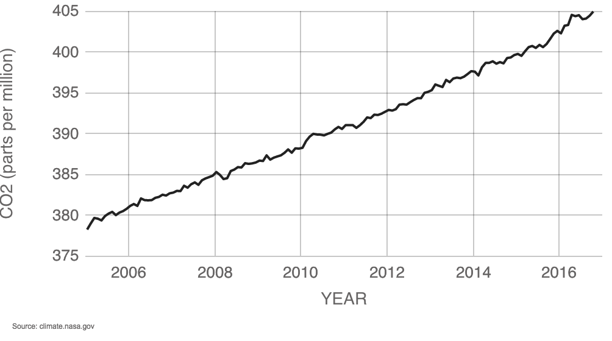

Direct measurements: 2005-2016
Carbon dioxide (CO2) is an important heat-trapping (greenhouse) gas, which is released through human activities such as deforestation and burning fossil fuels, as well as natural processes such as respiration and volcanic eruptions. The chart above shows CO2 levels in recent years, with average seasonal cycle removed.